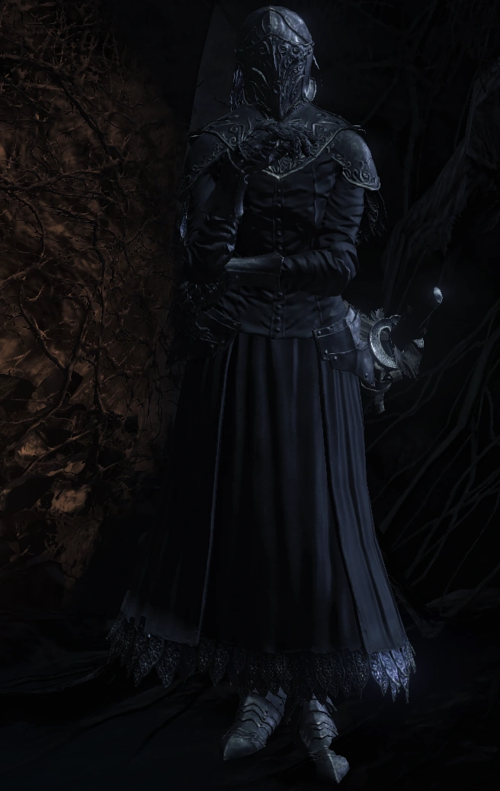

← Volver
← Volver
Yuria de Londor es un NPC de Dark Souls III. Un personaje muy misterioso, aparece cuando encuentras a Yoel muerto. Ella es una miembro de los Espectros Oscuros y se concentra principalmente en volver a alzar la Era de la Oscuridad. Yuria es, o una vez fue, una damisela de la serpiente primordial, el Acosador Oscuro Kaathe. Yuria es una de las tres hermanas que fundaron la Iglesia Azabache de Londor. Sus hermanas incluyen a Liliane, la hermana más joven y a Elfriede, la hermana mayor. En el juego principal, Yuria puede ser encontrada y se puede interactuar con ella, quien ofrecer misiones únicas e historia. Por otro lado, Elfriede se encuentra en el DLC Cenizas de Ariandel, donde juega un rol significativo. Liliana solo aparece en la cinemática del final "La Usurpación del Fuego", de pie junto a Yuria. La presencia de Yuria en el juego añade profunidad a la historia de Londor y a la narrativa general de Dark Souls III, conectando varios personajes y tramas.
Puedes encontrar a Yuria de Londor en el Santuario del Enlace de Fuego, cerca de donde se encuentra Yoel de Londor luego de completar su línea de misión.
Si decides matar a Yuria, debes estar atento a su rápida velocidad de movimiento y a su capacidad de causar daño alto en el mano a mano. Para hacer la batalla más fácil, llévala hasta la puerta principal del Santuario del Enlace de Fuego, ya que ella no puede atravesarla. Esta estrategia te permite atacarla sin arriesgarte al combate directo. Los ataques a distancia no son muy efectivos contra Yuria. Dada su agilidad y el daño significativo que aplica a corto rango, usar un arma con largo alcance es lo recomendado. Lanzas, alabardas u otras armas cuerpo a cuerpo que tengan buen alcance te pueden ayudar para mantener una distancia segura mientras aún causas daño consistente.
Enfurecer a Yuria causará que la Sombra Pálida de Londor invada el Fuerte de Farron e Irythill, soltando las Garras de Maniquí en el primer encuentro y el Conjunto de Sombra Pálida luego de ambas invasiones. Estas invasiones ocurrirán siempre y cuando estés braseado y no hayas derrotado a los jefes de las respectivas áreas. Normalmente, esta acción anula el final de la Usurpación del Fuego. Sin embargo, si el jugador golpea a Yuria 3 veces para provocarla, luego busca Absolución luego de ambas invasiones, puede experimentar ambas y aún conseguir el final de La Usurpación del Fuego. La Absolución se logra visitando la Estatua de Velka en el Asentamiento de los No Muertos, ubicada justo antes de la hoguera del Puente Dilapidado. Para alcanzar esta área, se requiere la Llave de la Tumba o un método para sobrevivir la caída al barranco donde se encuentra Eygon. La Llave de la Tumba puede ser adquirida al comprársela a la Sierva del Santuario por 1500 almas luego de entregarle las Cenizas del Mortuario.
| Objeto | Cantidad | Probabilidad | Suerte |
|---|---|---|---|
| Deriva Oscura | 1 | 10% | No |
| Cenizas de Yuria | 1 | 10% | No |
| Objetos | Cantidad | Almas | Requerimiento |
|---|---|---|---|
| Mano Oscura | 1 | 12000 | - |
| Piedra de Purga | ∞ | 4500 | - |
| Cuchillo Arrojadizo Envenenado | ∞ | 100 | - |
| Tomo Divino en Braile de Londor | 1 | 50 | - |
| Flecha del Alma | 1 | 1000 | 10 Inteligencia |
| Flecha del Alma Pesada | 1 | 2000 | 13 Inteligencia |
| Espadón del Alma | 1 | 5000 | 22 Inteligencia |
| Arma Mágica | 1 | 4500 | 10 Inteligencia |
| Escudo Mágico | 1 | 4500 | 10 Inteligencia |
| Anillo Oscuro Falso | 1 | 5000 | - |
| Anillo Blanco Falso | 1 | 5000 | - |
| Anillo del Sacrificio | 3 | 5000 | - |
Diálogo del primer encuentro
"..Oh, te lo ruego... ¿eres el buen amo de Yoel? Soy Yuria de Londor, una amiga cercana suya. Gracias a ti, el alma de Yoel ha sido redimida. Permíteme expresar mi gratitud en su lugar. Otro asunto. Eres un Señor, ¿verdad? Portador del sello oscuro y nuestro Señor de los Huecos. Mientras seas nuestro Señor, nosotros, los de Londor, te serviremos. Y yo, por supuesto, también soy tuya."
Misión de Orbeck de Vinheim
"Oh, buen Hueco. Me temo que debo decir... Orbeck de Vinheim causa mucha consternación. Se autoproclama Señor de los Huecos. Si se le deja solo, algún día podría poner en peligro tu gobierno. Aborda este asunto pronto, o nos desbarataremos. La decisión es la marca de un verdadero monarca..."
Luego de entregarle las cenizas de Orbeck
"Ah, veo que la afirmación de Orbeck ha resultado ser falsa. Como debe ser, nuestro legítimo y merecido Señor de las Huecas. Es un tesoro de Londor, digno de un verdadero Señor. Señor de los Huecos, que el sello oscuro te guíe."
Diálogo del segundo encuentro
"Nuestro Señor y Señor. ¿Conoces a un/a joven llamado Anri? Es un/a hombre/mujer sin alma y se unirá a ti en matrimonio. Un compañero mío lo guía en este momento. Cuando llegue el momento, podrás saludarlo. ¿Pues qué Señor no acepta cónyuge?"
Luego de derrotar al Pontífice Sulyvahn
"Ohh, saludos, nuestro Señor y Señor. Buenas noticias. Tu esposo/a está listo/a. Ha llegado el momento de saludarlo/a. El/La chico/a te espera en la cámara oculta de la luna oscura de Anor Londo. Para que te conviertas en un/a verdadero/a monarca."
Luego de realizar la ceremonia
"Ohhh, nuestro Amo y Señor. ¿Presumo que tus santos votos están jurados? ¡Maravilloso! Ahora eres el verdadero y merecedor Señor de los Huecos. Con un/a esposo/a, la fuerza para reclamar el fuego es tuya. Señorío, te ruego que despojes el fuego de su manto. Yo, Yuria y todo Londor, abrazamos tu inminente señorío."
"Nuestro Amo y Señor. Te ruego que seas el usurpador. Cuando llegue el momento de unir el fuego, despojaos de su manto. La Era del Fuego fue fundada por los antiguos dioses, sostenida por la unión del fuego. Pero los antiguos dioses ya no existen, y el fuego todopoderoso merece un nuevo heredero. Nuestro Señor de los Huecos, será, quien porta el verdadero rostro de la humanidad"
Al matarte
"Campesino, al menos tu cadáver servirá para hacer un poco de leña..."
Al morir
"Kaathe, te he fallado..."
Luego de hablar con la Hermana Friede (DLC)
"¡Ah, nuestro Señor y legítimo Señor! Tu aroma me resulta familiar. Una dulce fragancia, que hace tiempo se desvaneció de nuestro corazón. Mi Señor, no sé cómo sucedió esto, pero... ¡ Presta atención! La bondad puede erosionar los principios..."
Luego de derrotar a la Hermana Friede
"Ahh, nuestro Señor y Señor. Era el alma de mi hermana. Elfriede... Una pobre muchacha que se volvió Ceniza, que abandonaría Londor... Si lo deseas, que alimente tu Señorío. Y a cambio, hazle un pequeño favor. Recuerda a quienes la acompañaron hasta el final, bajo las sombras del fuego... Y por último, mi Señor, toma tu legítimo manto de usurpador."
Luego de colocar todas las Cenizas de los Señores
"¡Ah, nuestro Amo y Señor! Tu corazón está puesto en conectar el fuego. Pero, valiente usurpador, te ruego, arranca la llama de su manto. Para que nosotros, los Huecos, en la más honesta condición humana, podamos tenerla para nosotros."
Luego de colocar todas las Cenizas de los Señores sin haber completado la línea de misión de Anri
"¿A unir el fuego, supongo? No pienses en tus miedos. El sigilo oscuro te guiará. Une el fuego, nuestro Señor de los Huecos."
Diálogo del primer encuentro (luego de curar el Sigilo Oscuro)
"Habéis curado la Señal del Señor, no hay nada que conversar..."
Luego de matar al Peregrino
"Has renunciado a la Marca del Señor. No hay nada más que decir. Adiós, nuestro fugaz Señor."
Luego de atacarla una vez
"¿Dónde está tu ingenio?"
O luego de reclamar los Sigilos Oscuros de Anri de Astora
"Su Señoría, ¿qué ocurre?"
Luego de atacarla dos veces
"Detén esto de inmediato."
O luego de reclamar los Sigilos Oscuros de Anri de Astora
"Por favor, detente."
Matarla como Señor de los Huecos (habiendo terminado la línea de misión de Anri, tomando su Sello Oscuro)
"Valiente usurpador, te suplico que reclames el fuego..."
Luego de lograr que ella te ataque
"Hmph, Yoel no sabe de tu locura. Un Hueco no tiene por qué estar loco. ¡Nadie tan débil!"

 ↑
↑